Vamos a completar tu preparación para este reto viendo las posibilidades que nos ofrecen los clones en Scratch.
Vamos a completar tu preparación para este reto viendo las posibilidades que nos ofrecen los clones en Scratch.
Hasta ahora hemos visto el funcionamiento de algunos videojuegos en Scratch, la importancia de la interactividad y las variables para conseguir un videojuego atractivo.
Ahora vamos a ver la creación, funcionamiento y lo que nos puede aportar la utilización de clones para nuestro videojuego. Este estudio lo haremos a través del videojuego Fish Chomp en Scratch.
Al final, verás lo importante que pueden llegar a ser los clones para facilitarnos la programación de un videojuego.
¡Adelante!
Uso de clones para tener copias de un objeto
El uso de clones en un videojuego puede ser interesante ya que permite tener muchas copias de un objeto con el mismo comportamiento. Cada clon es una copia exacta del objeto original y tendrá el mimo código, sonidos y disfraces, de forma que:
- Cada clon ejecuta exactamente el mismo código que su objeto.
- Cada clon cuenta con los mismos componentes que su objeto (disfraces, variables, sonidos).
- Cuando se crea un clon, éste aparece exactamente en la misma posición que su objeto. La primera instrucción debe ser, por tanto, el posicionamiento del clon.
Un ejemplo de clones muy utilizado en los videojuegos es para simular el avance de un disparo, se consigue creando múltiples clones en las distintas posiciones de avance de la lanza, bomba o bala.
Uso de los clones
En este vídeo te contamos cómo puedes hacer uso de los clones en tus proyectos Scratch 3.0
Programación de clones
Los bloques de programación asociados a clonar objetos en Scratch son:
| Bloque de programación | Utilidad |
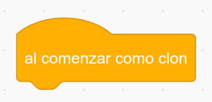 |
Permite ejecutar todos los bloques que coloques debajo una vez creado el clon del objeto seleccionado. |
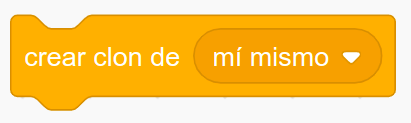 |
Permite crear clones del objeto seleccionado. |
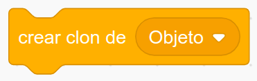 |
Permite crear clones de otro objeto de proyecto. |
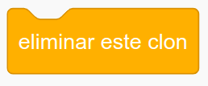 |
Borra el clon creado con anterioridad. |
Clones en Scratch
Vamos a ver cómo se pueden crear y programar clones en el Scratch. Por ejemplo para crear copos de nieve que simulen la caída de una nevada.
Recuerda que en la versión analizada sobre los clones vimos cómo a partir de un único objeto, un copo de nieve, creamos clones idénticos todos con el mismo comportamiento.
De esta forma, aprovechamos los clones para crear un múltiples objetos idénticos que presenten el mismo comportamiento.
Aquí tienes el ejemplo de clones que vamos analizar Los copos de nieve clonados. Comprueba su funcionamiento.
NOTA: Utiliza el ratón para mover el pez mordedor.
Programación de copos de nieve con clones
Vamos a ver los bloques de programación utilizados para crear una nevada compuesta por copos de nieve aplicando los clones en Scratch.
En la siguiente imagen podemos apreciar los bloques de programación del objeto copo de nieve y cómo inicialmente programamos la creación de los clones. Observa que escondemos el objeto original y vamos creando clones cada 0.3 segundos.
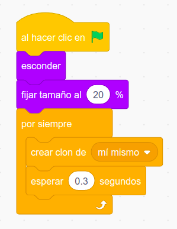
En los siguientes bloques de programación definimos el comportamiento de los clones creados. Los clones aparecerán en cualquier posición de la parte superior de la pantalla e irán descendiendo de forma progresiva hasta llegar a su borde inferior. En ese momento el clon será eliminado.
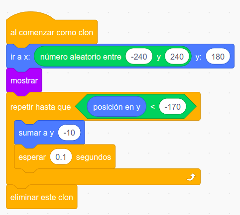
Apoyo visual
¡Llena el cielo de globos!
Aplica lo que has aprendido sobre los clones para llenar el cielo de globos.
Aprovecha los clones para que a partir de un único globo, puedas crear sus clones y programarlos para que tengan el mismo comportamiento.
A continuación te muestro algo parecido al efecto que debes conseguir.
Inserta los bloques de programación necesarios para crear muchos globos aplicando los clones. Puedes aprovechar este programa que ya tiene un globo y el fondo.
Solo te falta añadir los bloques de programación. ¡Ánimo, seguro que lo haces muy bien!
Aplica los clones en el videojuego Fish Chomp
Vamos a ver cómo se pueden aplicar los clones en el videojuego Fish Chomp. Por ejemplo, para crear los personajes amigos (peces pequeños).
Recuerda que en la versión analizada de este videojuego Fish Chomp los peces pequeños estaban creados como objetos individuales, aunque todos tenían el mismo comportamiento.
Aprovechando los clones podemos crear un único objeto (pez pequeño) y sus clones los programamos para que todos tengan el mismo comportamiento.
Funcionamiento del Fish Chomp con clones
Aquí tienes una versión que usa clones de Fish Chomp. Comprueba su funcionamiento.
NOTA: Utiliza el ratón para mover el pez mordedor.
Programación de la creación de los clones en el Fish Chomp
Vamos a ver los bloques de programación utilizados para crear los peces amigos cada tres segundos, aplicando los clones en el videojuego Fish Chomp.
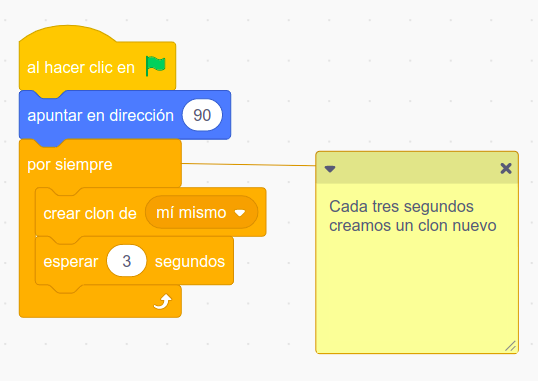
Programación del comportamiento de los clones en el Fish Chomp
En la siguiente imagen podemos apreciar los bloques de programación del objeto pez pequeño y cómo replicamos el comportamiento del pez pequeño original (bloques de la izquierda) a cada uno de los clones creados (bloques de la derecha).
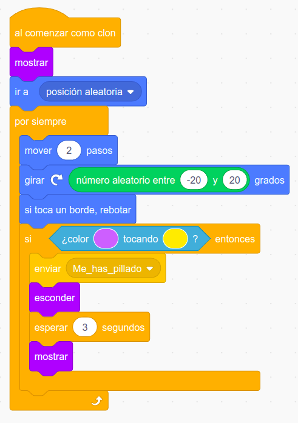
Utiliza los clones para crear otros personajes
En este ejercicio vas a trabajar en pareja, en el anterior videojuego de Fish Chomp, utiliza la creación de clones para crear múltiples personajes adicionales con el mismo comportamiento.
En este caso, haz que aparezcan múltiples clones de otro pez pequeño de la galería de objetos de Scratch, diferentes al actual del videojuego, haz que aparezcan desde distintas posiciones, se muevan de forma aleatoria por el fondo marino y reboten al tocar los bordes.
NOTA: Utiliza el ratón para mover el pez mordedor.
Lumen dice ¿Necesitas ayuda con este ejercicio?
Aquí te muestro una posible solución para inspirarte, pero no puedes utilizar este ejemplo como solución al ejercicio.
Piensa si te pueden servir los mismos bloques de programación que tiene el pez pequeño ya creado, aunque recuerda cambiar el color del sensor para que exista interactividad entre el nuevo pez insertado y el pez mordedor.
NOTA: Utiliza el ratón para mover el pez mordedor.
Crea disparos utilizando clones
A continuación, te pedimos aplicar el concepto de clones en un simple videojuego de naves para crear los disparos.
Una vez creados los objetos disponibles en la galería de Scratch; la nave y el disparo que puede ser una bola de tamaño pequeño, se programa el movimiento de la nave y los bloques del disparo aprovechando los clones.
NOTA: Utiliza el ratón para mover la nave. Dispara con la tecla espacio.
Aquí te muestro los dos conjuntos de bloques de programación que te pueden ayudar para la creación y el comportamiento de los clones que permiten simular los disparos de la nave.
Elementos y bloques de programación
Como puedes apreciar en la siguiente imagen los bloques de programación de los clones están asociados al objeto bola.
Creación de los clones de los disparos
Posibles bloques de programación para la creación de los clones de los disparos.
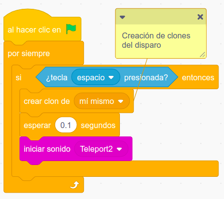
Comportamiento de los clones
A continuación, puedes apreciar una posible combinación de bloques de programación para definir el comportamiento de los clones de los disparos.
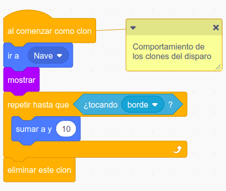
Pong al límite con los clones
Te propongo el siguiente cambio en el Pong aprovechando el uso de clones.
Incorpora otra bola al juego, cada vez que una bola toque la pala, de forma que se cree un nuevo clon con cada toque de la pala.
¡Vaya locura! Se hace muy difícil jugar ¿verdad?
Para ello, ordena los siguientes bloques que definen el comportamiento de los clones de la bola, situados a la derecha de la imagen, colócalos en el lugar adecuado debajo del evento A comenzar como clon.
Haz clic sobre la imagen para ampliarla.
{kind=link}
Lumen dice ¿Necesitas ayuda con las mejoras?
Replica los bloques de código del siguiente programa. Bloques para clonar la bola del Pong cuando golpea la pala.
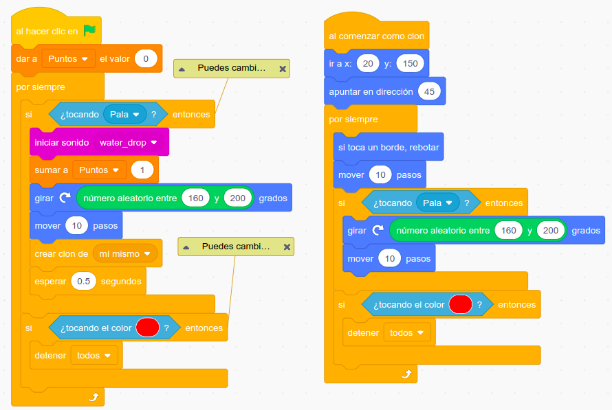